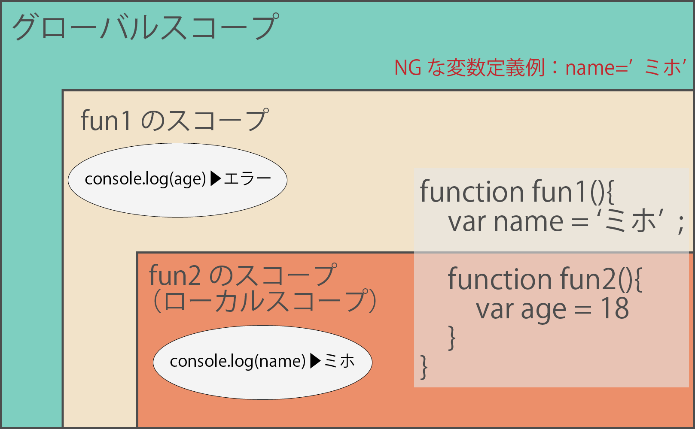
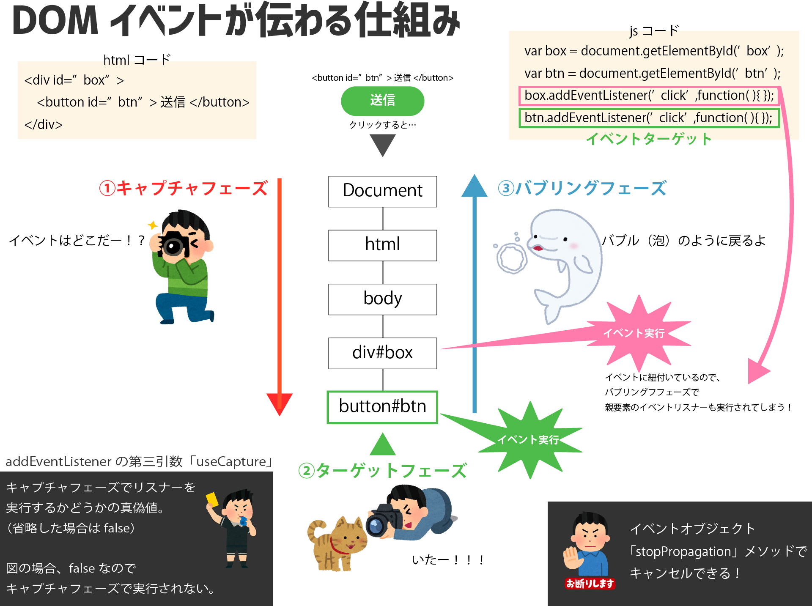
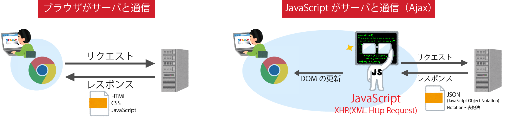
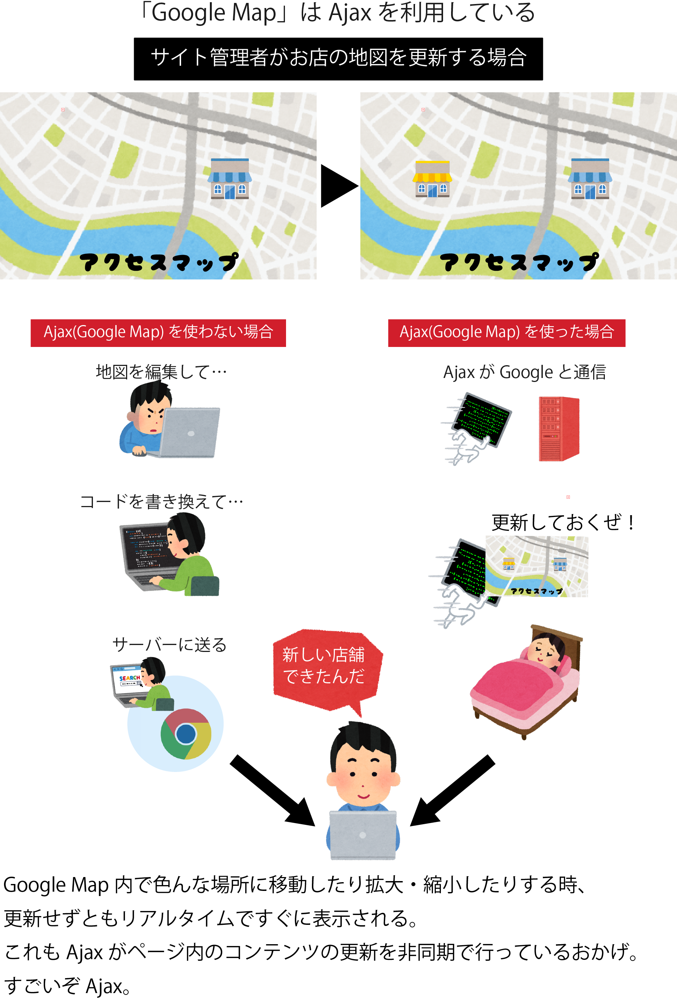

目次
はじめに
ここは「知識ゼロからのJavaScript入門」という書籍を通して学んだことをまとめたページです。
この本は大きく９項目で構成されていますが、最初の３項目、
- CHAPTER1 WEBシステムとJavaScript
- CHAPTER2 JavaScriptを書き始める前に
- CHAPTER3 初めてのJavaScript
の部分は省略しました。
というのも上記３項目では、DOMについてや、演算、変数、条件分岐、関数など、JavaScriptの基礎・基本の部分が書かれています。
このページの活用方法
- jsファイルを見て意味がわかるか試す
- もっと効率的な書き方はないか考える
※コードの説明や解釈が間違っている部分があれば、遠慮なくご指摘いただければと思います。
それでは学習のまとめを御覧ください。
JavaScript実践

所々にコードを載せていますが、エディタのエラーメッセージを防ぐために「＞」「＜」を全角に変換してあります。
万が一コピペする際はお気をつけください。
m(_
_)m
HTMLのテキスト情報変更
「Result」で結果が見られます
See the Pen JavaScript入門 HTMLのテキスト変更 by jookalubi (@jookalubi) on CodePen.
使用したJavaScript
- innerHTML…要素が持つ情報を参照したり変更したりできる。
- document.getElementById('id名')
liタグの作成
「Result」で結果が見られます
See the Pen JavaScript入門 liタグの作成 by jookalubi (@jookalubi) on CodePen.
使用したJavaScript
- for文
- document.createElement('要素')
- document.createTextNode('要素のテキスト')
- 要素.appendChild(変数)…要素に変数を追加
クリックでポップアップ表示
「Result」で実行できます
See the Pen JavaScript入門 クリックでポップアップ表示 by jookalubi (@jookalubi) on CodePen.
使用したJavaScript
- 変数.addEventListener('click',function(){alert('表示テキスト')})
現在時刻の表示
See the Pen JavaScript入門 現在時刻の表示 by jookalubi (@jookalubi) on CodePen.
使用したJavaScript
- var date = new Date()
- var hour = date.getHours()
- var min = date.getMinutes()
- var sec = date.getSeconds()
- setInterval(繰り返したい処理,間隔)
倍数当てゲームの作成
「Result」で実行できます
See the Pen JavaScript入門 倍数当てゲーム by jookalubi (@jookalubi) on CodePen.
使用したJavaScript
- var date = new Date()
- var hour = date.getHours()
- var min = date.getMinutes()
- var sec = date.getSeconds()
- clearInterval()
※addEventListenerの中身が長くなってしまう場合は、addEventListenerの外で関数化する。
jQueryについて
プログラムの開発効率を上げるために「ライブラリ」と呼ばれる、他の人が作成したコードを利用する文化がある。
jQueryはJavaScriptのライブラリの一つである。
jQueryのメリット
jQueryを利用することで簡潔に書けるようになる。
JavaScript
変数＝documet.getElementByID(id名);
変数.addEventListener(イベント名,処理);
jQuery
変数＝$(id名);
変数.on(イベント名,処理)(;
クロスブラウザ対応しなくてよい
jQueryにはあらかじめクロスブラウザ対応の処理が実装されている。
例えばaddEventListenerはIE8に対応していないため、代わりにattachEventで対応しなければならない（コード量が増える）。
jQuery実践
クリックでポップアップ表示
「Result」で実行できます
See the Pen JavaScript入門 jQuery ポップアップ表示 by jookalubi (@jookalubi) on CodePen.
使用したjQuery
- onメソッド(click)
テキストフィールドの文字数を表示
「Result」で実行できます
See the Pen ExabqQj by jookalubi (@jookalubi) on CodePen.
使用したjQuery
- onメソッド(keyup…キーボードを打って離した時の処理)
-
valメソッド…レシーバ（呼び出し元のオブジェクト）となる要素情報のvalue属性を返す
今回の場合はinputの入力値（value属性）をtextという変数に返して（代入して）いる。 -
textメソッド…レシーバ要素のテキスト情報を取得、変更できる。
今回は引数（text.length）を与えているので、レシーバ要素を引数の値に変更している。
JavaScriptのinnerHTMLと同じ処理。
チェックが付いたラジオボタンのテキスト表示
「Result」で実行できます
See the Pen KKwyOQJ by jookalubi (@jookalubi) on CodePen.
使用したjQuery
- changeメソッド
- イベントオブジェクト(e)…発生したイベントに関する情報
- currentTarget…イベントオブジェクト内のプロパティの１つ
- nextメソッド…レシーバに隣接する次の要素情報を取得する。 今回の場合では＜label＞になる。
つまり「e.currentTarget」は、イベントオブジェクトの中のcurrentTargetという情報を取得している。
テキストフィールドが未入力ならサブミットボタンを無効
- コードの内容
- 文字を入力すると送信ボタンが押せるようになる
- 入力した文字をポップアップ表示
「Result」で実行できます
See the Pen KKwybGL by jookalubi (@jookalubi) on CodePen.
使用したjQuery
-
prpメソッド…引数の数によって処理が変わる
$要素.prop(属性名)…属性の値を取得
$要素.prop(属性名,値)…属性に値を設定 -
preventDefaultメソッド…要素に紐づくブラウザ機能をキャンセルする。
送信ボタンなどでページ遷移したくない時、
aタグなどでページ遷移する前にJavaScriptで処理したい時、などで使用する。
フォームバリデーターの作成
- コードの内容
- タイトルまたは本文が0字で警告
- タイトル10字以上または本文25字以上で警告
- 条件を満たすと送信ボタンが押せるようになる
- 送信ボタンを押すとポップアップが表示
「Result」で実行できます
See the Pen JavaScript入門 jQuery バリデーターの作成 by jookalubi (@jookalubi) on CodePen.
使用したjQuery
-
htmlメソッド…レシーバ要素が持つHTMLの取得・変更ができる。
$erros.html('')…$errorsのHTML要素（今回だと子要素の＜li＞を空('')にしている。
JavaScriptを深める
スコープの範囲
スコープとは…変数の有効範囲

スコープまとめ
- 関数単位（functionごと）で作成される。
- 外側のスコープから内側のスコープの変数は参照できない。
- 内側のスコープから外側のスコープの変数は参照できる。
-
変数定義は「var」を使わなくても出来るが、そうするとグローバル変数になるため、極力使わないようにする。
グローバル変数は広範囲に影響を及ぼし、バグを起こしやすいので危険。
CSSでいうp{margin-bottom:10px;}みたいなもの。
DOMイベントの伝播
イベントがどう伝わっていくのか
DOMに対してイベントが発生した場合、３つのフェーズに分かれてイベントがDOMに伝播する。
- キャプチャフェーズ
- ターゲットフェーズ
- バブリングフェーズ
「Document→html→body→…→ターゲット」のルート
通常ここで通ったDOMのリスナーは実行されない。
ターゲットでリスナーが実行される。
「ターゲット→…→body→html→Document」のルート
（addEventListenerの場合）発生したイベントに紐付くリスナーが登録されていると、親要素のイベントリスナーもこのタイミングで実行される。

addEventListenerの”第３引数”とは
addEventListenerには「useCapture」という第三引数がついており、キャプチャフェーズでリスナーを実行するかどうか判定する真偽値がある。
省略した場合、falseになり、キャプチャフェーズでは実行されない。
以下のようにtrueにすると、キャプチャフェーズの時点（ターゲットフェーズより前）で実行される。
下記コードは横スクロールできますbox.addEventListener('click',function(){
console.log('クリックされたよ');},true);
しかしこのuseCaptureがfalseでもtrueでも結局は意図せずに実行されてしまう。そういう時は、
「stopPropagation」というメソッドで伝播をキャンセルできる。
下記コードは横スクロールできますbox.addEventListener('click',function(e){e.stopPropagation();
console.log('クリックされたよ')},true);
DOMイベントまとめ
- DOMイベントが発生すると、キャプチャフェーズ、ターゲットフェーズ、バブリングフェーズの順にイベントが伝播する。
-
addEventListenerの第三引数はキャプチャフェーズでリスナーを実行するかどうかの真偽値（useCapture）。
省略するとfalseとなりキャプチャフェーズで実行される。 - イベントオブジェクトの「stopPropagation」メソッドを使うと、バブリングフェーズの伝播をキャンセルできる。
同期処理・非同期処理
- 同期処理…
- 時間と共に書いてあるコード順に実行される処理。
※同期処理では処理実行中はユーザーがブラウザからの操作を行えない（ブロッキングになる）ので、複雑な処理や時間がかかる処理がある場合はユーザビリティを損ねるため良くない。
下記コードは横スクロールできます
//同期処理
function fun1() {
console.log('麦わら');
}
function fun2() {
console.log('帽子の君');
}
function fun3() {
console.log('揺れたマリーゴールド');
}
//結果
麦わら
帽子の君
揺れたマリーゴールド
- 非同期処理…
- 「ある条件」を満たすと実行される処理。処理の予約のようなもの。
その「ある条件」を満たしたときに実行される関数をコールバック関数という。
下記コードは横スクロールできます
//非同期処理
function fun1() {
console.log('麦わら');
}
function fun2() {
console.log('帽子の君');
}
function fun3() {
console.log('揺れたマリーゴールド');
}
//setIntervalでコールバックとして実行
setInterval(fun1, 3000);//「3秒ごとにfun1を実行してね」という予約
setInterval(fun2, 5000);//「5秒ごとにfun2を実行してね」という予約
//結果
揺れたマリーゴールド
麦わら
帽子の君
同期処理・非同期処理まとめ
- 同期処理はコード順（順次）に実行される。
- 同期処理が実行されている間はユーザーはブラウザ上からの操作が行えない。（ブロッキング）
- 非同期処理は条件を満たした時に実行される予約のようなもので、ブロッキングによる待ち時間を減らす。
Ajaxについて
Ajaxとは？
「Asynchronous JavaScript XML」の略称（Asynchronous…非同期）
通常はブラウザがサーバと通信を行うが、AjaxではJavaScriptがブラウザの代わりにサーバと非同期通信を行う。

AjaxではJavaScriptのXHRオブジェクトというもので、サーバと通信してレスポンスデータを受け取っている。
レスポンスデータから必要な情報を取り出し、更新したい所を変更している。
そのため、HTMLファイルを変更する必要がない。
「Google Map」はAjaxを利用したサービス
通常、新しいページやコンテンツを表示するときにはブラウザで更新（サーバと通信）しなくてはならない。
しかしGoogle Mapで、例えばドラッグやスワイプで地図を移動したとき（新しいコンテンツを表示するとき）、ブラウザは更新していない（ページ全体を再読み込みしたり、更新ボタンを押したりしない）。
これはGoogle MapがAjaxを用いてページ内コンテンツの更新を非同期でやっているから。

JSONについて
- JSONとは
- 「JavaScript Object Notation」の略称。
- JavaScriptのオブジェクトに似たフォーマットのデータ。
- AjaxでのレスポンスデータはJSONになることが多い。
Ajaxを扱うときに必要な知識
リクエストの種類
- GET
- サーバに送る情報をURLに付与して通信する方法
- HTMLなどデータのリクエストではGETを使用する。
- POST
- サーバに送る情報をリクエスボディという領域に入れて通信する方法
- フォームから送信する場合など、サーバに送る情報が多いリクエストではPOSTを使用する。
ステータスコードについて
Webページでときどき目にする「404」などのコードは、サーバが処理結果に応じて返しているステータスコードのひとつ。
| ステータスコード | 意味 |
| 200 OK | リクエストが問題なく受理され、要求に沿ったレスポンスデータを返せる場合 |
| 301 Moved Permanently | リクエストされた情報が別の場所に移動した場合（ページの改装が変更されたなど） |
| 302 Found | 一時的に、リクエストされた情報が別の場所に移動した場合（メンテナンス時など） |
| 403 Forbidden | サーバ側でアクセスが許可されていない領域に対してリクエストがあった場合 |
| 404 Not Found | リクエストされた情報が見つからない場合 |
| 500 Internal Server Error | サーバ側に何らかの不具合（バグ）があり、リクエストされた情報が返せない場合 |
AjaxでJSONを取得する
どういったものかだけ紹介。
コード内のコメントアウトで解説する。
HTMLファイル（省略）
＜body＞
＜ul class="fruits"＞＜/ul＞
（省略）
JSONファイル{
"fruits":["リンゴ","モモ","バナナ"]
}
Ajaxのコード（JavaScript）$.ajax({
type:'GET',//リクエスト方法
url:'data.json',
dataType:'json',//受信するレスポンスデータのフォーマット
success:function(response){//リクエストが受理された場合の処理
var fruits=response["fruits"];
var$ul=$('.fruits');
for(var i=0;i＜fruits.length; i++){
$ul.append('＜li＞'+fruits[i]+'＜/li＞')
}
},
error:function(xhr,status,error){//リクエストの通信が失敗した場合の処理
console.log(status,error);
}
});
上記のコードを実行すると、JSON内の情報（リンゴなど）がli要素として出力される。
Ajaxまとめ
- AjaxとはJavaScriptでサーバと非同期通信する技術のこと
- Ajaxのリクエスト送信、レスポンスデータの受信はJavaScriptのXHRオブジェクトで行う。
- Ajaxでは多くの場合、JSONというデータをレスポンスデータとして利用する。
- リクエストするときは、GETとPOSTなどの方法がある。
JavaScriptの学習について
基礎・基本が身についたあとの学習方法
- 学習した本を再読してコードの内容を理解する
- 言語仕様の理解を深める
- 自分でコードを書いてみる（CodePen推奨）
Webの情報を利用するときの注意点
- コピペする際はコードの内容を理解できるようにする
- コピペしたコードを変更してアレンジしてみる
- コピペばかりにならないようにする
まとめ
JavaScriptは今までProgateやドットインストールやいろんな書籍を通してして、勉強してコードを書いて色々作ってきましたが、今回のDOMイベントなど、仕組みのことはほとんど理解していなかったなと、勉強になりました。
タイトルが「知識ゼロから～」ですが、知識ゼロでなくても十分読み応えのある良書でした。
「HTMLとCSSのスキルはそこそこ身についたから、JavaScript挑戦してみるか～」という方などにおすすめです。
最後まで読んでいただきありがとうございましたm(_ _)m